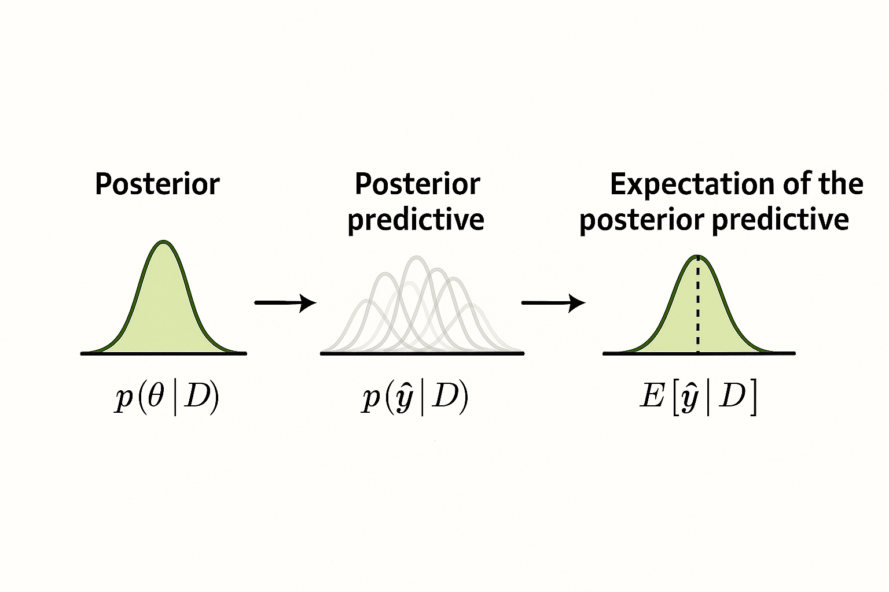
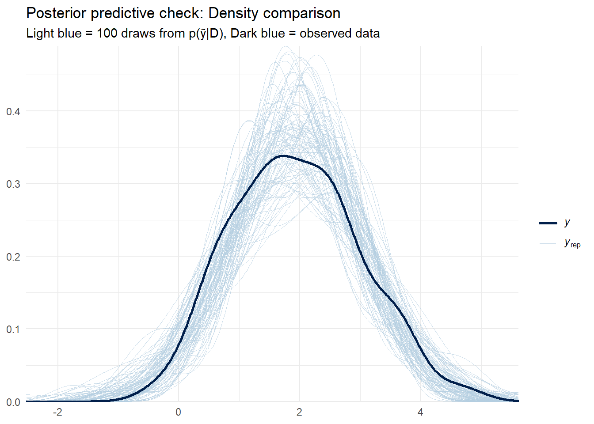
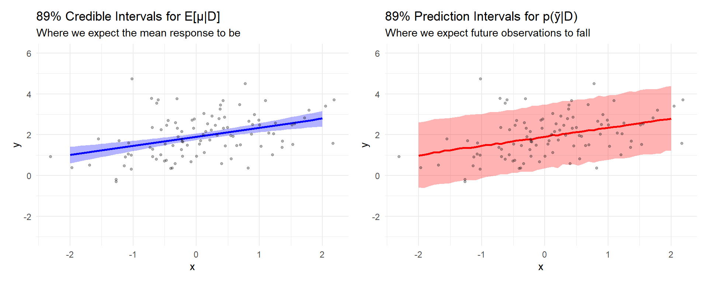

From Complex MCMC Algorithms to Simple Matrix Arithmetic
bayesian
prediction
inference
Author
Stefan Schreiber
Published
November 5, 2025

From uncertainty, form arises — the flow from belief to prediction.
So you’ve just fit your first Bayesian model using brms or rstanarm. Maybe you were surprised by how easy it was – the syntax looked almost exactly like lm() for a simple linear regression. You hit run, waited a bit longer than usual, and got… output. Lots of output.
You look at the summary. There are means and standard deviations, credible intervals, and mysterious diagnostics like “Rhat” and “ESS”. But wait – where are the p-values 😜 And how do you actually make predictions? People keep talking about “posterior predictions” and “posterior distributions” – what do those actually mean, and how do you work with them?
If you’ve ever felt confused by the terminology around Bayesian predictions – posterior predictive distributions, expected predictions, prediction intervals – you’re not alone. But here’s the secret: once your Bayesian model calculates the posterior distribution, everything else is just computing means, quantiles, and other summary statistics. Let me show you what I mean.
Note: All examples in this post were built using R with the rstanarm, tidybayes, and ggplot2 packages. You can follow along by copying and pasting the code – everything is self-contained and reproducible. We’ll focus primarily on Normal (Gaussian) linear models throughout this post, though the workflow applies to all model families (see the Advanced Topics section at the end for important details about non-linear models).
The Core Insight
Bayesian inference has two phases:
The hard part: Computing the posterior distribution \(p(\theta\mid D)\) (this is where MCMC comes in).
The easy part: Summarizing that posterior and quantities derived from it – means, standard deviations, quantiles, etc.
Once you have posterior samples from \(p(\theta\mid D)\), you can generate:
the posterior distribution of the mean response \(p(\mu\mid D)\)
the posterior predictive distribution \(p(\tilde{y}\mid D)\)
and then summarize these distributions in various ways: means (expectations) like \(E[\tilde{y}\mid D]\), medians, quantiles for intervals, etc.
Why is the hard part hard?
Before the “easy part”, a quick sketch of why computing the posterior is challenging (you don’t have to master this to use Bayesian methods, but the intuition helps).
The goal: A joint probability over all parameters!
\(p(\theta \mid D)\): posterior – what we believe about parameters after seeing data
\(p(D \mid \theta)\): likelihood – how well parameters explain the data
\(p(\theta)\): prior – what we believed before seeing data
\(p(D)\): marginal likelihood / evidence – a normalizing constant
Because \(p(D)\) is often intractable, we work with \(p(\theta \mid D) \propto p(D \mid \theta)\, p(\theta)\). For a simple regression with parameters \(\alpha,\beta,\sigma\):
This is a joint distribution in a high-dimensional space. More parameters ⇒ higher dimension.
Starting simple: Grid approximation
You’re a fish biologist studying the hatching rate, denoted by \(\theta\), of rainbow trout. In an experiment, 4 out of 10 eggs hatched.
Instead of chasing a single “best” estimate, we want the entire posterior distribution of plausible hatching rates given both our data and prior beliefs. This is the key idea in Bayesian inference – we quantify uncertainty rather than ignore it.
To make this concrete, we use a grid approximation. We choose a fine grid of possible hatching rates, \[
\theta \in [0, 1],
\] meaning \(\theta\) can take any value between 0 (no eggs hatch) and 1 (all eggs hatch).
For each possible value of \(\theta\), we compute how likely it is to observe 4 hatched eggs out of 10, multiply that by the prior belief about \(\theta\), and normalize so the probabilities sum to one.
The result is a posterior distribution over \(\theta\): it shows not just which hatching rate is most plausible, but how confident we are about different possibilities – allowing us to summarize uncertainty with quantities like the posterior mean, median, mode (MAP), or credible intervals.
Show code
library(ggplot2)# Define a grid of possible hatching rates from 0 to 1theta_grid <-seq(from =0, to =1, length.out =100)# Prior options:prior_flat <-rep(1, 100) # Uninformative (flat)prior_conservative <-dbeta(theta_grid, 5, 5) # Moderate rates likelyprior_optimistic <-dbeta(theta_grid, 8, 2) # High rates likelyprior_skeptical <-dbeta(theta_grid, 2, 8) # Low rates likely# 👉 CHANGE THIS LINE to try different priors:prior <- prior_flat # Likelihood: how likely is observing 4/10 for each possible θ?# Observed data: 4 hatched out of 10 eggssuccesses <-4trials <-10observed_rate <- successes / trialslikelihood <-dbinom(successes, size = trials, prob = theta_grid)# Posterior ∝ Likelihood × Prior, then normalizeposterior <- likelihood * priorposterior <- posterior /sum(posterior)# Visualize the posterior distributiondata.frame(theta = theta_grid, posterior = posterior) |>ggplot(aes(x = theta, y = posterior)) +geom_line() +geom_area(alpha =0.3) +# Dashed red line = observed rate (from data), stays fixed# Shows how different priors shift the posterior relative to observed datageom_vline(xintercept = observed_rate, linetype ="dashed", color ="red") +labs(x ="Hatching rate (θ)",y ="Posterior probability",title ="Posterior distribution with 100 grid points") +theme_minimal()
Try changing the prior (e.g., prior_conservative, prior_optimistic, or prior_skeptical) and re-running the code to see how different prior beliefs influence the posterior. This highlights one of the most important insights in Bayesian inference – the posterior reflects both the data and the prior assumptions.
Quick tie-in: From this posterior \(p(\theta\mid D)\), we can generate a posterior predictive distribution \(p(\tilde{y}\mid D)\) (e.g., future hatch counts) and summarize it using statistics like the mean \(E[\tilde{y}\mid D]\), median, or credible intervals.
The curse of dimensionality (and continuity)
The grid approach worked because we only had one parameter to explore. But once we add even a few more – say a slope, an intercept, and a noise term – the same idea breaks down. We’d need to evaluate millions of grid points just to cover the space:
1 parameter, 100 grid points ⇒ 100 evaluations
2 parameters ⇒ \(100^2 = 10{,}000\)
3 parameters ⇒ \(100^3 = 1{,}000{,}000\)
10 parameters ⇒ \(100^{10}\) (astronomical)
Most parameters are also continuous, so inference involves integrals over infinitely many values. For instance, marginalizing \(\beta\):
Analytical solutions exist for special conjugate cases; real-world models usually require computation.
The solution: MCMC explores the joint probability space
Markov chain Monte Carlo (MCMC) avoids gridding and intractable integrals by sampling parameter values, spending more time in high-probability regions of the joint posterior space. After convergence and warm-up, the draws are (approximately) samples from the posterior \(p(\theta \mid D)\).
The result is a table of draws (rows = draws, columns = parameters). That table is the payoff. From here, we move to predictions by generating the posterior predictive distribution \(p(\tilde{y} \mid D)\), which we can then summarize with statistics such as its mean \(E[\tilde{y} \mid D]\), median, or quantiles.
A simple example: the matrix structure
Now, how do posterior parameter draws become predictions? Think in matrices.
Each column corresponds to one posterior draw of \((\alpha,\beta,\sigma)\). For each draw and each observation \(i\), compute the linear predictor \(\mu_i = \alpha + \beta x_i\). Stack those \(\mu\) values into a matrix: rows = observations, columns = draws.
Show code
# IMPORTANT: This uses only 3 draws for illustration.# Real analyses use 1,000–4,000+ draws.predicted_matrix <-matrix(c(2.0, 2.1, 1.9, # Obs 1: μ₁ from posterior draws 1, 2, 31.0, 1.2, 1.1, # Obs 2: μ₂ from posterior draws 1, 2, 34.0, 3.8, 4.2, # Obs 3: μ₃ from posterior draws 1, 2, 31.0, 1.1, 0.9# Obs 4: μ₄ from posterior draws 1, 2, 3), nrow =4, byrow =TRUE)rownames(predicted_matrix) <-c("Obs 1", "Obs 2", "Obs 3", "Obs 4")colnames(predicted_matrix) <-c("Draw 1", "Draw 2", "Draw 3")
Connecting this to Bayesian prediction:
The columns come from \(p(\theta\mid D)\) – posterior samples of parameters.
Each row across columns represents the posterior distribution of the mean response \(p(\mu_i\mid D)\) for observation \(i\).
Row summaries (mean, quantiles) give point estimates like \(E[\mu_i\mid D]\) and credible intervals.
Let’s display the matrix with row means (i.e., expected mean responses for this toy example):
Prediction Matrix: Each row is an observation, each column is a posterior draw
Draw 1
Draw 2
Draw 3
Row Mean
Obs 1
2
2.1
1.9
2.0
Obs 2
1
1.2
1.1
1.1
Obs 3
4
3.8
4.2
4.0
Obs 4
1
1.1
0.9
1.0
Once predictions are organized this way, everything reduces to simple arithmetic across columns:
Mean response\(E[\mu_i\mid D]\): row means (averaging the posterior distribution of the mean response for each observation)
Credible intervals for the mean response: rowwise quantiles of the \(\mu_i\) values
Next we’ll add \(\sigma\) to generate the full posterior predictive distribution \(p(\tilde{y}\mid D)\) and prediction intervals
The three stages of Bayesian prediction
To pull our ideas together, here’s the compact relationship we’ll now use repeatedly:
Stage
Distribution
What it describes
Uncertainty captured
How we get it
1
\(p(\theta\mid D)\)
What we believe about parameters after seeing data
Parameter uncertainty
MCMC sampling
2
\(p(\mu\mid D)\)
Posterior distribution of the mean response
Parameter uncertainty (propagated to \(\mu\))
For each \(\theta^{(s)}\), compute \(\mu^{(s)} = \alpha^{(s)} + \beta^{(s)} x\)
3
\(p(\tilde{y}\mid D)\)
Posterior predictive: distribution over future observations
Parameter + observation uncertainty
For each \(\mu^{(s)}\), draw \(\tilde{y}^{(s)} \sim \text{Normal}(\mu^{(s)}, \sigma^{(s)})\)
4
Summaries
Point estimates and intervals from stage 2 or 3
Depends on what we summarize
e.g., \(E[\tilde{y}\mid D] = \frac{1}{S}\sum_s \tilde{y}^{(s)}\) or quantiles
Key insight: Each stage builds on the previous one. We start with parameter draws from MCMC (stage 1), push them through our model equation to get mean responses (stage 2), add observation noise to get predictions (stage 3), and finally summarize those distributions (stage 4). Note that summaries from stage 2 will have narrower intervals than summaries from stage 3 because stage 3 includes observation noise.
Plain language: posterior over parameters ⇒ compute expected responses ⇒ add noise to get predictions ⇒ summarize.
Understanding the two kinds of predictions
Posterior distribution of the mean response: \(p(\mu\mid D)\)
The posterior distribution of the mean response: For each observation \(i\) and each posterior parameter draw \(\theta^{(s)}\) (where \(s\) indexes the draw), we compute the mean response:
\[\mu_i^{(s)} = \alpha^{(s)} + \beta^{(s)} x_i\]
The collection of values \(\{\mu_i^{(s)}\}_{s=1}^S\) represents samples from the posterior distribution of the mean response at \(x_i\). We can summarize this distribution by computing the mean across posterior draws:
For Normal models: Because the observation noise has mean zero, \(E[\mu_i|D] = E[\tilde{y}_i|D]\). This means we can work with \(\mu\) directly without simulating full observations – the expected value of the mean response equals the expected value of a future observation.
Show code
# For each observation, compute the mean of the posterior distribution# of the mean response (i.e., mean across posterior draws)# This gives E[μᵢ|D], which equals E[ỹᵢ|D] for Normal modelsepred <-rowMeans(predicted_matrix)print(epred)
Obs 1 Obs 2 Obs 3 Obs 4
2.0 1.1 4.0 1.0
Important note about non-linear models
The equality \(E[\mu_i|D] = E[\tilde{y}_i|D]\) holds for Normal linear models, but breaks down for models with non-linear link functions (logistic, Poisson, etc.). For those models, always generate full posterior predictive draws first, then summarize. See the Advanced Topics section at the end of this post for details and examples.
Prediction intervals are always wider: they include both uncertainty about the mean response and the natural spread of outcomes.
Decision guide (tidybayes/R workflow)
Question
Use
What you get
Function
What’s the average outcome?
Mean response distribution
distribution \(p(\mu\mid D)\); summarize to get \(E[\tilde{y}\mid D]\)
add_epred_draws()
What might I observe?
Posterior predictive
distribution \(p(\tilde{y}\mid D)\)
add_predicted_draws()
Is my model realistic?
Posterior predictive
compare simulations to data
add_predicted_draws()
What’s the effect of X?
Mean response distribution
change in \(E[\mu\mid D]\)
add_epred_draws()
Do I need prediction intervals?
Posterior predictive
full uncertainty range
add_predicted_draws()
Mini-recap: parameters \(p(\theta\mid D)\) ⇒ mean responses \(p(\mu\mid D)\) ⇒ predictions \(p(\tilde{y}\mid D)\) ⇒ summaries like \(E[\tilde{y}\mid D]\).
A complete example with real tools
Let’s fit a model with rstanarm using default priors (see help('prior_summary') for more details) and inspect the output.
Show code
library(rstanarm)library(tidybayes)library(dplyr)library(ggplot2)# Simulate some data: y = 2 + 0.5x + noiseset.seed(123)n <-100x <-rnorm(n)y <-2+0.5* x +rnorm(n, sd =1)data <-data.frame(x = x, y = y)# Fit Bayesian regression (MCMC to get posterior samples)fit <-stan_glm(y ~ x, data = data,family =gaussian(),chains =4, iter =2000,refresh =0)summary(fit)
Model Info:
function: stan_glm
family: gaussian [identity]
formula: y ~ x
algorithm: sampling
sample: 4000 (posterior sample size)
priors: see help('prior_summary')
observations: 100
predictors: 2
Estimates:
mean sd 10% 50% 90%
(Intercept) 1.9 0.1 1.8 1.9 2.0
x 0.4 0.1 0.3 0.4 0.6
sigma 1.0 0.1 0.9 1.0 1.1
Fit Diagnostics:
mean sd 10% 50% 90%
mean_PPD 1.9 0.1 1.8 1.9 2.1
The mean_ppd is the sample average posterior predictive distribution of the outcome variable (for details see help('summary.stanreg')).
MCMC diagnostics
mcse Rhat n_eff
(Intercept) 0.0 1.0 3751
x 0.0 1.0 3770
sigma 0.0 1.0 3506
mean_PPD 0.0 1.0 4125
log-posterior 0.0 1.0 1789
For each parameter, mcse is Monte Carlo standard error, n_eff is a crude measure of effective sample size, and Rhat is the potential scale reduction factor on split chains (at convergence Rhat=1).
Understanding the output
Model Info (top):
function: stan_glm – we’re using Stan’s generalized linear model
family: gaussian [identity] – Normal distribution with identity link (standard linear regression)
sample: 4000 – we have 4000 posterior draws (4 chains × 2000 iterations, after warmup)
The model recovered our true parameters! The sd column shows posterior uncertainty – how much each parameter varies across draws. The percentiles (10%, 50%, 90%) give you credible intervals.
MCMC Diagnostics (bottom table):
Rhat = 1.0 for all parameters → chains converged ✓
n_eff > 1700 for all → plenty of effective samples ✓
These diagnostics tell us we can trust our posterior samples. Always check these before using your model!
The key insight: This summary is just describing columns of the posterior draws matrix. Each parameter gets one row showing its column mean, column SD, and column quantiles. After MCMC does the hard work, everything else is simple arithmetic on those columns.
Now let’s check if this model is any good before using it for predictions.
Posterior predictive checks: Is your model any good?
Before we use our model for predictions, we should check: does data simulated from our model look like our actual data? If not, our model is missing something important.
Show code
library(bayesplot)# Extract posterior predictive samplesy_rep <-posterior_predict(fit)# Compare distribution of observed vs. simulated datappc_dens_overlay(y, y_rep[1:100, ]) +labs(title ="Posterior predictive check: Density comparison",subtitle ="Light blue = 100 draws from p(ỹ|D), Dark blue = observed data") +theme_minimal()

What to look for: Do the light blue curves (simulated data) cover the dark blue curve (observed data)? If observed data looks like “just another draw” from the model, that’s good. If it’s systematically different (e.g., observed has heavier tails, bimodality, etc.), your model may need revision.
In our case: The simulated data (light blue curves) nicely envelope the observed data (dark blue), suggesting our Normal linear model with constant variance is reasonable for this dataset.
When PPCs reveal problems
If posterior predictive checks fail, common issues include:
Outliers not captured: Consider robust likelihoods (Student-t instead of Normal)
Now that we’ve validated our model, let’s see both types of predictions in action. Remember: add_epred_draws() gives you the posterior distribution of the mean response\(p(\mu|D)\), while add_predicted_draws() gives you the posterior predictive distribution\(p(\tilde{y}|D)\) (mean response plus observation noise). Both are distributions that we then summarize with statistics like means, medians, or quantiles.
Show code
# Now we can extract both types of predictions:# - add_epred_draws(): posterior distribution of mean response p(μ|D)# - add_predicted_draws(): posterior predictive distribution p(ỹ|D)# Let's visualize both simultaneously:data |>add_epred_draws(fit) |>ggplot(aes(x = x, y = y)) +# Blue bands: credible intervals for E[μ|D]stat_lineribbon(aes(y = .epred), .width =c(0.61, 0.89)) +# Black points: observed datageom_point(data = data, size =2, alpha =0.8) +# Red points: 50 samples from p(ỹ|D) showing full predictive distributiongeom_point(data = data |>add_predicted_draws(fit) |>sample_draws(50),aes(y = .prediction),color ="red", alpha =0.15, size =1) +scale_fill_brewer() +labs(title ="Expected predictions (blue) vs. Posterior predictions (red)",subtitle ="Blue bands: E[μ|D] credible intervals; Red: samples from p(ỹ|D)",caption ="Black = observed data | Blue = credible intervals for mean response | Red = posterior prediction samples") +theme_minimal()
What the figure is showing
Black points: observed data
Blue bands: credible intervals for the posterior distribution of the mean response \(p(\mu\mid D)\). Each band shows where the expected response is likely to be; the center line represents \(E[\mu\mid D]\) which equals \(E[\tilde{y}\mid D]\) for Normal models.
Red points: samples from the posterior predictive distribution \(p(\tilde{y}\mid D)\) – plausible observations that include observation noise \(\sigma\)
Why are the red points more dispersed? They include \(\sigma\), the irreducible variation around the mean response. If you re-ran the same study, new observations would scatter around the blue line much like those red points.
Comparing credible intervals vs. prediction intervals
The plot above shows both types of uncertainty, but let’s make the distinction even clearer with a direct comparison:
Show code
library(patchwork)# Create new data for predictionnewdata <-data.frame(x =seq(-2, 2, length.out =50))# Get both types of intervalsepred_intervals <- newdata |>add_epred_draws(fit) |>median_qi(.epred, .width =0.89)pred_intervals <- newdata |>add_predicted_draws(fit) |>median_qi(.prediction, .width =0.89)# Plot credible intervals (for mean response)p1 <-ggplot(epred_intervals, aes(x = x, y = .epred)) +geom_ribbon(aes(ymin = .lower, ymax = .upper), alpha =0.3, fill ="blue") +geom_line(color ="blue", size =1) +geom_point(data = data, aes(x = x, y = y), alpha =0.3, size =1) +labs(title ="89% Credible Intervals for E[μ|D]",subtitle ="Where we expect the mean response to be",y ="y") +theme_minimal() +coord_cartesian(ylim =c(-3, 6))# Plot prediction intervals (for observations)p2 <-ggplot(pred_intervals, aes(x = x, y = .prediction)) +geom_ribbon(aes(ymin = .lower, ymax = .upper), alpha =0.3, fill ="red") +geom_line(color ="red", size =1) +geom_point(data = data, aes(x = x, y = y), alpha =0.3, size =1) +labs(title ="89% Prediction Intervals for p(ỹ|D)",subtitle ="Where we expect future observations to fall",y ="y") +theme_minimal() +coord_cartesian(ylim =c(-3, 6))p1 + p2

Key insight: Both plots show the same fitted line, but:
Left (blue): Narrow bands showing uncertainty about the average relationship. “If I could repeat this experiment infinite times, where would the mean response at each \(x\) value fall?”
Right (red): Wide bands showing uncertainty about individual observations. “If I collect one new data point at this \(x\) value, where will it likely fall?”
Notice how the observed data points (black dots) mostly fall within the red bands but often outside the blue bands – exactly as they should. The blue bands don’t try to capture individual observations; they capture the mean trend.
Practical implications:
Planning a policy based on expected outcomes? Use credible intervals (blue).
Predicting whether a specific patient will respond? Use prediction intervals (red).
Building a forecast with uncertainty bounds? Use prediction intervals (red).
Takeaway: from complex to simple
Hard part: compute \(p(\theta\mid D)\) with MCMC (explore a high-dimensional space; replace intractable integrals with samples).
Easy part: treat those samples like columns in a matrix and do arithmetic to move through the stages:
Posterior parameters \(p(\theta\mid D)\) ⇒ compute the mean response \(\mu\) for each draw
Add observation noise to get posterior predictive draws \(p(\tilde{y}\mid D)\)
Summarize these distributions using row-wise statistics: row means give point estimates like \(E[\tilde{y}\mid D]\), row quantiles give credible intervals (from the mean response distribution) and prediction intervals (from the posterior predictive distribution)
Keep the stages of Bayesian prediction in mind and everything else becomes mechanical.
Advanced Topics
Non-Linear Models and Jensen’s Inequality
Throughout this post, we’ve focused on Normal linear models where \(E[\mu_i|D] = E[\tilde{y}_i|D]\) – a convenient mathematical property that makes the math simpler. But what happens with other model families like logistic or Poisson regression?
For models with non-linear link functions, this equality breaks down due to Jensen’s inequality: for non-linear functions, the average of the transformed values does NOT equal the transformation of the average. Understanding this is crucial for working correctly with generalized linear models.
A concrete example: Logistic regression
Show code
# In logistic regression: probability = logit⁻¹(linear predictor)# Simulate posterior uncertainty on the linear predictor (log-odds scale)set.seed(456)log_odds <-rnorm(1e5, mean =0, sd =2)# Two approaches give very different probabilities:results <-c(mean_then_transform =plogis(mean(log_odds)), # logit⁻¹(E[η]) = 0.50transform_then_mean =mean(plogis(log_odds)) # E[logit⁻¹(η)] ≈ 0.60)print(round(results, 3))
In logistic regression, probabilities are \(\pi = \text{logit}^{-1}(\eta)\) where \(\eta\) is the linear predictor.
Wrong approach: Average first, then transform: \(\text{logit}^{-1}(E[\eta|D])\) ≈ 0.50
Right approach: Transform first, then average: \(E[\text{logit}^{-1}(\eta)|D]\) ≈ 0.60
The difference arises because \(\text{logit}^{-1}\) is non-linear (it’s an S-curve). The correct expected probability is 0.60, not 0.50!
The three tidybayes functions for different scales
When working with non-linear models, you have three options depending on what scale you want to work on:
Function
What it returns
Scale
Use when…
add_linpred_draws()
Linear predictor \(\eta\)
Link scale (log-odds, log-rate, etc.)
You want to work on the linear scale, show effects before transformation, or do arithmetic before transforming
add_epred_draws()
Expected value \(E[y\mid\eta]\)
Response scale (probability, count, etc.)
You want the mean of the posterior predictive - this correctly handles the non-linear transformation via integration
add_predicted_draws()
Simulated outcomes \(\tilde{y}\)
Response scale with noise
You want actual predicted observations (0/1 for binomial, integer counts for Poisson, etc.)
The key insight:add_epred_draws() properly handles Jensen’s inequality by computing \(E[g(\eta)|D]\) where \(g\) is the inverse link function. This is NOT the same as \(g(E[\eta|D])\)!
The general lesson
For any model with non-linear transformations:
For expected values on the response scale: Use add_epred_draws() - it correctly integrates over parameter uncertainty
For working on the link scale: Use add_linpred_draws() - useful for visualizing effects or contrasts before transformation
For prediction intervals or simulating outcomes: Use add_predicted_draws() - gives you actual draws with observation noise
Practical advice
For expected predictions (what we’ve been calling \(E[\tilde{y}|D]\)): use add_epred_draws() for all model families. It correctly handles the non-linear transformation.
For Normal models only:add_epred_draws() and averaging the linear predictor happen to give the same answer, which is why we could take shortcuts in the main post. For other families, you must use add_epred_draws().
Examples in other model families
Logistic regression (binary outcomes):
# Fit logistic modelfit_logistic <-stan_glm(success ~ x, data = data, family =binomial())# For expected probabilities (CORRECT):mean_probs <- newdata |>add_epred_draws(fit_logistic) |># Returns probabilitiessummarize(mean_prob =mean(.epred)) # Average the probabilities# For effects on the log-odds scale:log_odds_effects <- newdata |>add_linpred_draws(fit_logistic) |># Returns log-oddssummarize(mean_logodds =mean(.linpred))# For prediction intervals (actual 0/1 outcomes):predictions <- newdata |>add_predicted_draws(fit_logistic) |># Returns 0 or 1median_qi(.prediction)
Poisson regression (count outcomes):
# Fit Poisson modelfit_poisson <-stan_glm(count ~ x, data = data, family =poisson())# For expected counts (CORRECT):mean_counts <- newdata |>add_epred_draws(fit_poisson) |># Returns expected countssummarize(mean_count =mean(.epred))# For effects on the log scale:log_effects <- newdata |>add_linpred_draws(fit_poisson) |># Returns log(counts)summarize(mean_log =mean(.linpred))# For prediction intervals (actual integer counts):predictions <- newdata |>add_predicted_draws(fit_poisson) |># Returns integer countsmedian_qi(.prediction)
Key insight: The workflow stays the same across model families, but you must choose the right function for your question. For expected values on the response scale (the most common use case), add_epred_draws() is always correct.
Further reading
McElreath’s Statistical Rethinking has excellent coverage of posterior prediction and makes these concepts very intuitive
Gelman et al.’s Bayesian Data Analysis (Chapter 7) covers posterior predictive checking in detail
The tidybayes documentation and vignettes provide great examples of working with posterior draws in a tidy format, including detailed guidance on add_epred_draws() vs add_predicted_draws() vs add_linpred_draws()
Citation
BibTeX citation:
@online{schreiber2025,
author = {Schreiber, Stefan},
title = {Understanding {Bayesian} {Predictions}},
date = {2025-11-05},
url = {https://envirostats.ca/posts/2025-11-05-understanding-bayesian-predictions/},
langid = {en}
}